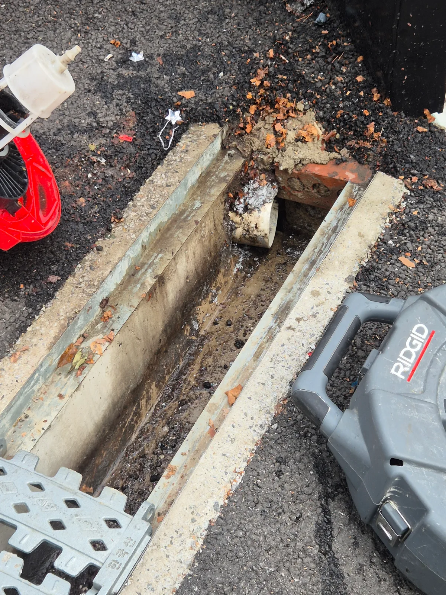

서초구 양재동 하수구막힘, 현장 도착 후 진단
신라건축설비가 방문한 서울 서초구 양재동 현장은 건물 주차장 외부 트렌치와 출수구 쪽 배수가 막힌 상황이었습니다. 해당 구간에는 기름때와 이물질이 많이 쌓여 있었습니다.
외부 트렌치와 출수구의 배수불량은 연결된 건물 하부 공용배관 상태도 함께 살펴볼 필요가 있습니다. 다만 당시 자체 시설팀이 자리를 비운 상황이어서, 이번에는 출수구 쪽 긴급 통수를 우선 진행했습니다.
1단계: 증상 확인과 필요한 장비 작업
외부 트렌치에서 접근할 수 있는 출수구 쪽 배관에 리지드 샤프트를 투입했습니다. 배수를 방해하는 기름때와 이물질을 처리해 물길을 확보하기 위한 장비 선택이었습니다.
이번 작업 범위는 긴급하게 배수를 회복해야 하는 출수구 쪽 구간으로 잡았습니다. 공용배관 전체를 세척한 작업과는 구분해 진행했습니다.

2단계: 원인 구간 처리와 정상 작동 확인
샤프트로 막힘 구간을 처리한 뒤 물이 빠지는 상태를 확인했습니다. 작업 후에는 물이 원활하게 내려가는 것을 확인해 긴급 통수를 마무리했습니다.
출수구에서 배수가 회복됐더라도 연결된 공용배관의 상태까지 모두 확인된 것은 아니므로, 시설팀과 배관 구조를 확인한 뒤 추가 조치 여부를 판단할 필요가 있다고 설명했습니다.

작업 결과와 재발 방지 안내
서초구 양재동 주차장 외부 트렌치·출수구 쪽 막힘은 샤프트 작업 후 정상적으로 물이 빠지는 것을 확인했습니다.
같은 구간에서 배수불량이 반복되면 출수구뿐 아니라 건물 하부 공용배관도 점검하는 것이 좋습니다. 배관 구조나 손상 문제가 확인되면 보수를 검토하고, 기름때와 잔존 이물질이 넓게 쌓여 있으면 고압세척이 필요할 수 있습니다. 이번 현장에서는 이러한 후속 점검 방향을 안내했으며, 고압세척이나 배관보수까지 시행한 것은 아닙니다.
최종 조치: 시설팀 부재 상황에서 출수구 쪽 막힘 구간을 우선 샤프트로 처리했습니다. 물이 잘 빠지는 것을 확인하고, 공용배관 구조 점검 결과에 따라 보수 또는 고압세척이 필요할 수 있음을 안내했습니다.
현장 방문 전 확인하는 비용과 작업 범위
신라건축설비는 현장 증상과 배관 구조를 확인한 뒤 필요한 작업과 예상 비용을 안내합니다. 단순 관통으로 해결되는지, 배관내시경·석션·고압세척 또는 추가 장비가 필요한지는 현장 상태에 따라 달라집니다. 출장비와 야간 작업비, 추가 장비 비용이 발생할 수 있는 경우 작업 전에 먼저 설명하고 동의를 받은 범위에서 진행합니다.
업체를 선택할 때 확인할 사항
무조건적인 ‘0원’ 표현보다 실제 작업 범위, 추가 비용 조건, 사용 장비와 사후 대응 기준을 확인하는 것이 중요합니다. 해결되지 않았을 때의 비용 기준과 작업 후 동일 증상 발생 시 점검 범위를 사전에 문의해두면 불필요한 분쟁을 줄일 수 있습니다.
서초구 하수구막힘 자주 묻는 질문
하수구막힘은 왜 반복되나요?
서초구 양재동 현장처럼 건물 주차장 외부 트렌치와 출수구 쪽 배관이 막혀 물이 원활하게 빠지지 않았습니다. 증상은 원인이 현장마다 다를 수 있습니다. 배관 내부 기름 슬러지·생활 오염물·스케일이 충분히 제거되지 않았거나 오수관·공용배관 구간에 문제가 있으면 반복될 수 있습니다. 재발 시 막힌 위치와 배관 상태를 함께 확인합니다.
하수구가 역류하거나 물이 안 내려가면 하수구뚫는업체를 불러야 하나요?
바닥 배수구가 역류하거나 여러 배수구에서 동시에 물이 빠지지 않으면 단순 배수구 막힘보다 깊은 배관이나 공용배관 문제일 수 있습니다. 전문 장비로 원인 구간을 확인하는 것이 좋습니다.
여러 배수구가 동시에 막히면 공용배관이나 오수관 문제인가요?
동시에 여러 곳에서 배수 불량과 역류가 발생하면 메인배관·오수관·공용배관을 의심할 수 있지만 건물 구조마다 다릅니다. 배관내시경과 현장 진단으로 구간을 구분합니다.
하수구뚫는업체는 어떤 장비로 작업하나요?
현장에 따라 샤프트, 석션, 배관내시경, 고압세척 장비 등을 사용합니다. 단순 관통이 필요한지 배관 내부 세척까지 필요한지는 오염 상태와 막힘 원인에 따라 판단합니다.
하수구 고압세척은 언제 필요한가요?
기름 슬러지나 배관 내부 오염이 넓게 쌓여 반복 막힘이 생기는 경우 고압세척이 효과적일 수 있습니다. 모든 하수구막힘에 고압세척을 적용하는 것은 아니며 먼저 배관 상태를 확인합니다.
하수구막힘 비용은 어떻게 정해지나요?
막힌 위치, 배관 길이와 구경, 공용배관 여부, 내시경·샤프트·고압세척 등 장비 투입 범위에 따라 달라집니다. 추가 작업이 필요한 경우 진행 전에 범위와 비용을 안내합니다.
하수구막힘 서울·경기 출동지역
신라건축설비는 서초구 양재동 현장을 포함해 서울 25개 구와 경기도 31개 시·군의 배관 문제를 상담합니다. 현장 거리와 기사 배정 상황에 따라 출동 가능 여부를 먼저 안내드립니다.
서울 전 지역
강남구 · 강동구 · 강북구 · 강서구 · 관악구 · 광진구 · 구로구 · 금천구 · 노원구 · 도봉구 · 동대문구 · 동작구 · 마포구 · 서대문구 · 서초구 · 성동구 · 성북구 · 송파구 · 양천구 · 영등포구 · 용산구 · 은평구 · 종로구 · 중구 · 중랑구
경기도 주요 출동지역
수원시 · 용인시 · 고양시 · 화성시 · 성남시 · 부천시 · 남양주시 · 안산시 · 평택시 · 안양시 · 시흥시 · 파주시 · 김포시 · 의정부시 · 광주시 · 하남시 · 광명시 · 군포시 · 양주시 · 오산시 · 이천시 · 안성시 · 구리시 · 의왕시 · 포천시 · 양평군 · 여주시 · 동두천시 · 과천시 · 가평군 · 연천군